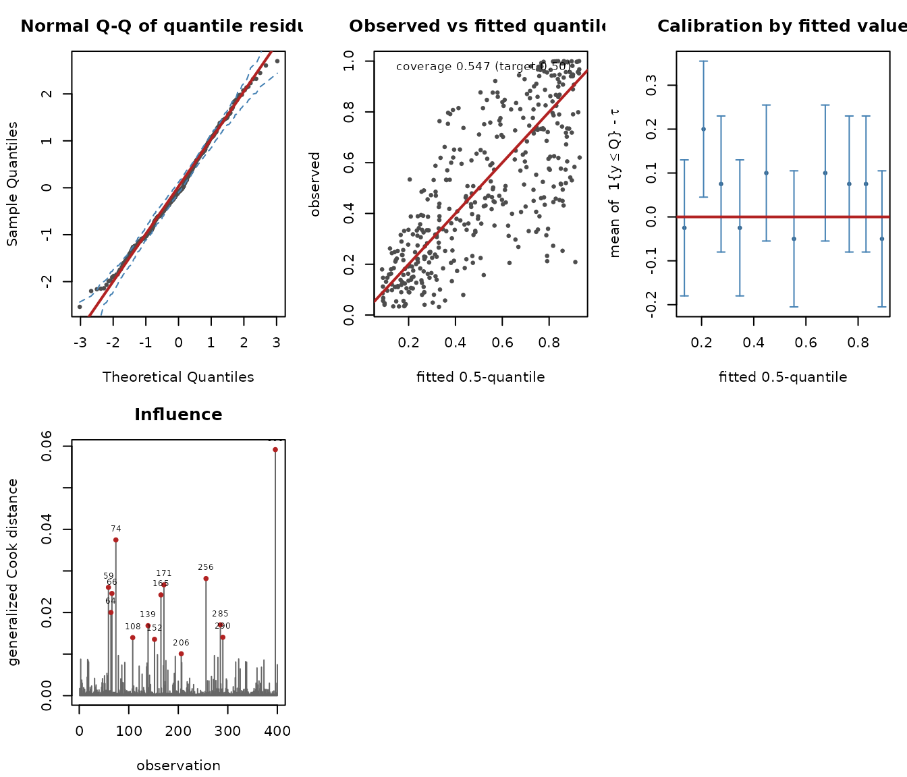
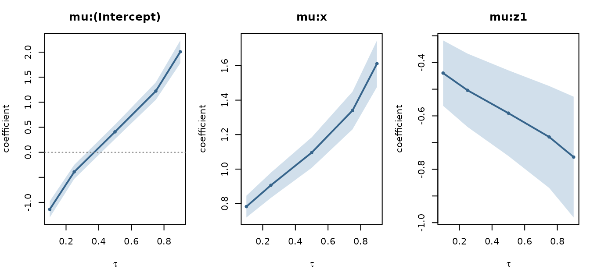

The question this package answers
Suppose a response lies strictly between 0 and 1 — a yield, a proportion, an index — and you care about its upper tail rather than its average. Two families of tools exist.
Check-function quantile regression
(quantreg::rq) is distribution-free and indexed by a
quantile level tau. It is the reference method and it stays
consistent even when you have no idea what the conditional distribution
looks like.
Distributional regression (gkwreg,
betareg, gamlss) fits a full parametric model
for the conditional distribution, and can report quantiles afterwards by
applying the quantile function to the fitted parameters. That answers
“given the fitted distribution, what is its 90th
percentile?”
Neither answers “how do covariates shift the 90th percentile?” with a coefficient you can read off and a standard error that refers to it. The first has no likelihood; the second has no parameter that is the 90th percentile.
gkwqreg fixes tau in advance and
reparametrizes the distribution so that one of its parameters is exactly
the conditional tau-quantile.
A first fit
n <- 400
x <- runif(n, -2, 2)
z <- rbinom(n, 1, 0.5)
mu <- plogis(0.4 + 1.1 * x - 0.6 * z) # the conditional MEDIAN
y <- gkwdist::rkw(n, alpha = 2, beta = log1p(-0.5) / log1p(-mu^2))
dat <- data.frame(y = y, x = x, z = factor(z))The data are generated so that
plogis(0.4 + 1.1 x - 0.6 z) is the conditional median.
Fitting at tau = 0.5 should recover those numbers.
fit <- gkwqreg(y ~ x + z, data = dat, tau = 0.5, family = "kw")
summary(fit)
#>
#> Generalized Kumaraswamy quantile regression
#> family: kw tau: 0.5 anchor: beta
#>
#> Call:
#> gkwqreg(formula = y ~ x + z, data = dat, tau = 0.5, family = "kw")
#>
#> Quantile residuals:
#> Min 1Q Median 3Q Max
#> -2.5379 -0.6547 -0.0864 0.7107 2.6987
#>
#> Conditional 0.5-quantile (link logit) -- coefficients are effects on the LOG QUANTILE ODDS log(mu/(1-mu)):
#> Estimate Std. Error z value Pr(>|z|)
#> mu:(Intercept) 0.40895 0.07330 5.579 2.42e-08 ***
#> mu:x 1.09564 0.04521 24.236 < 2e-16 ***
#> mu:z1 -0.58971 0.08181 -7.208 5.67e-13 ***
#> ---
#> Signif. codes: 0 '***' 0.001 '**' 0.01 '*' 0.05 '.' 0.1 ' ' 1
#>
#> alpha (link log):
#> Estimate Std. Error z value Pr(>|z|)
#> alpha:(Intercept) 0.71665 0.05258 13.63 <2e-16 ***
#> ---
#> Signif. codes: 0 '***' 0.001 '**' 0.01 '*' 0.05 '.' 0.1 ' ' 1
#>
#> Anchored parameter: beta (computed from the quantile, not estimated)
#> Log-likelihood: 218.5 on 4 Df AIC: -429.1 BIC: -413.1
#> Pinball loss: 0.07309 Pseudo-R1: 0.4099
#> Empirical coverage: 0.5475 (target 0.5)
#> Covariance: expected Information condition number: 14.7Three things in that output are worth pausing on.
The header names the family, the quantile level and the anchored parameter. All three change what the model is, so none of them is hidden.
The coefficient block for mu is
labelled as effects on the log quantile odds, not on a mean and not on
the odds of an event. This is the most likely thing for a reader to get
wrong.
Empirical coverage reports the fraction of
observations below the fitted quantile. It should sit at
tau, and it is the cheapest available check that the fit is
doing what it claims.
The formula has one part per modelled parameter
Part one is always the conditional quantile. The remaining parts
follow the family’s parameter order with the anchored parameter removed.
gkwq_parts() is the contract:
gkwq_parts("kw")
#> [1] "mu" "alpha"
gkwq_parts("ekw")
#> [1] "mu" "alpha" "lambda"
gkwq_parts("gkw")
#> [1] "mu" "alpha" "gamma" "delta" "lambda"So for kw the second part is alpha:
fit_het <- gkwqreg(y ~ x + z | x, data = dat, tau = 0.5, family = "kw")Omitted trailing parts default to ~ 1. Supplying
more parts than the family has is an error that names
the parts it expected, rather than silently ignoring the extras.
What the coefficients mean
marginal_effects(fit)
#>
#> Marginal effects on the conditional 0.5-quantile (averaged over the sample)
#> dQ(tau|x)/dx_j, logit link
#>
#> variable effect std.error lower upper
#> x 0.2005 0.004448 0.1918 0.20926
#> z1 -0.1079 0.014756 -0.1369 -0.07902exp(coef(fit)["mu:x"]) is the multiplicative effect on
the odds of the conditional median. marginal_effects()
converts that to the effect on the median itself,
beta_j * mu * (1 - mu) under the logit link.
There is a small bonus in this parametrization. If a covariate
appears in both the quantile part and a nuisance part, the
effect on the quantile is still exactly the expression above, because
mu is the quantile — the nuisance part
changes the spread of the conditional distribution, not the quantile
being modelled. marginal_effects() says so when it detects
the overlap.
Choosing a family
The seven families are genuinely nested, so a likelihood-ratio test applies:
fit_kw <- gkwqreg(y ~ x + z, data = dat, tau = 0.5, family = "kw")
fit_ekw <- gkwqreg(y ~ x + z, data = dat, tau = 0.5, family = "ekw")
anova(fit_kw, fit_ekw)
#> Likelihood-ratio test for Generalized Kumaraswamy quantile regression
#> tau = 0.5, anchor = beta
#> Df logLik AIC Chisq Chi Df Pr(>Chisq)
#> [1,] 4 218.54 -429.09
#> [2,] 5 218.70 -427.41 0.3199 1 0.5716For an out-of-sample choice, prefer the pinball loss: it is the criterion a quantile estimate actually targets, whereas AIC compares likelihoods.
compare_families(fit_kw, families = c("kw", "ekw", "bkw", "beta"))
#> family anchor df logLik AIC BIC pinball converged
#> 1 kw beta 4 218.54268 -429.0854 -413.1195 0.07309073 TRUE
#> 2 ekw beta 5 218.70265 -427.4053 -407.4480 0.07307413 TRUE
#> 3 bkw beta 6 218.70265 -425.4053 -401.4565 0.07307413 TRUE
#> 4 beta gamma 4 91.95507 -175.9101 -159.9443 0.07996509 TRUEDiagnostics
head(residuals(fit, type = "quantile"))
#> 1 2 3 4 5 6
#> -1.2276386 0.2353487 -1.8771430 1.3929028 1.4770079 1.3762688
head(residuals(fit, type = "tau-sign"))
#> [1] 0.5 -0.5 0.5 -0.5 -0.5 -0.5"quantile" residuals are standard normal under correct
specification and are the default. "tau-sign" is specific
to quantile regression: under a correctly specified model
E[1{Y <= Q_tau(X)} | X] = tau exactly, so binning these
by any covariate and testing for a zero mean is a distribution-free
calibration check with no analogue in mean regression. Panel 5 of the
diagnostic plot draws it.

Several quantile levels
Each level is a separate likelihood, so a vector tau
returns a container of independent fits rather than one pooled
object.
fits <- gkwqreg(y ~ x + z, data = dat, tau = c(0.1, 0.25, 0.5, 0.75, 0.9),
family = "kw")
round(coef(fits), 3)
#> 0.10 0.25 0.50 0.75 0.90
#> mu:(Intercept) -1.140 -0.391 0.409 1.223 2.007
#> mu:x 0.782 0.906 1.096 1.340 1.612
#> mu:z1 -0.440 -0.504 -0.590 -0.679 -0.754
#> alpha:(Intercept) 0.694 0.709 0.717 0.713 0.700
plot(quantile_process(fits), parts = "mu")
The coefficient path shows how the effect of x changes
across the distribution — the picture quantile regression exists to
produce.
Crossing
Independently fitted levels carry no guarantee that fitted quantiles
increase with tau:
check_crossing(fits)
#>
#> Quantile crossing check
#> levels: 0.10, 0.25, 0.50, 0.75, 0.90
#> source: independently fitted models, one per level
#>
#> rows with a crossing: 0 of 400 (0.00%)
#> worst violation : 0.000e+00A single fit cannot cross, because its quantiles are those of one proper distribution function:
check_crossing(fit, taus = seq(0.1, 0.9, by = 0.1))
#>
#> Quantile crossing check
#> levels: 0.1, 0.2, 0.3, 0.4, 0.5, 0.6, 0.7, 0.8, 0.9
#> source: quantiles implied by ONE fitted distribution
#>
#> rows with a crossing: 0 of 400 (0.00%)
#> worst violation : 0.000e+00
#>
#> Zero crossings is guaranteed here, not luck: these are quantiles of
#> a single proper distribution function. That guarantee is what a
#> parametric fit buys over independently fitted levels.If separate fits do cross, rearrange() applies the
monotone rearrangement of Chernozhukov, Fernández-Val and Galichon
(2010).